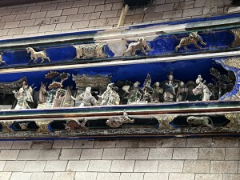
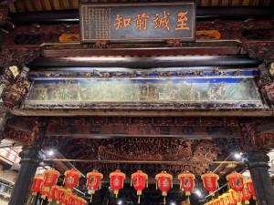
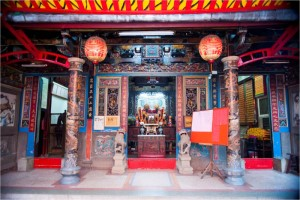
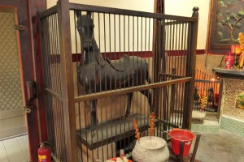

嘉義城隍廟 是奉祀嘉義縣城隍綏靖侯的道教廟宇，位於臺灣嘉義市東區，於清治時期在台灣府諸羅縣官府最初創建的城隍廟，也是諸羅城的三大古廟之一，也是見證嘉義地方歷史以及文化信仰中心，目前列屬國定古蹟。 當時諸羅縣管轄區域南至新港溪、北迄基隆包括宜蘭一帶等，都是諸羅縣城隍爺信仰祭祀範圍內。 現今城隍廟為泉州溪底派匠師王錦木主司重建，建築富麗，格局尊貴，對木雕藝術表現深具特色，拜殿之八卦藻井，正殿步口及次間看架斗栱，全由榫卯鬥成，不用一釘一鐵，匠藝巧奪天工。位於拜殿水車堵，左右兩面各有細膩傳神的交趾陶傑作，係陳專友和林添木兩位大師「拚場」之作品，藝術價值非凡。而門神則由臺南名匠陳玉峰重繪。其他廟中神像、脊飾、彩繪、石雕、木雕等做工精美，是您參觀城隍廟時必看的經典。 城隍廟保存之歷史文物，還包括全臺城隍廟唯一獲皇帝賜匾的「臺洋顯佑」匾，太子太保王得祿獻「道宏化育」匾及及晉江龔道南所獻大算盤……等許多珍貴文物；另有昭和12年（1937）日本政府執行眾神歸天政策，拆廢眾廟宇，眾廟慘遭浩劫，獨城隍廟倖然留存，且收留各廟神衹，可見當時城隍廟的地位甚高。 地址： 600嘉義市東區吳鳳北路168號 資料來源：維基百科、嘉義市政府全球資訊網 |
||
|  |  |  |
「諸羅第一古廟」雙忠廟 嘉義雙忠廟，簡稱雙忠廟、又稱元帥廟、睢陽廟。該廟主祀雙忠元帥，位在臺灣嘉義市東區，相傳是嘉義市第一間漢人創建的廟宇，故有「嘉義第一古廟」之稱。此外根據臺灣省文獻委員會在1984年所做的統計，臺灣有16座雙忠廟，其中以嘉義雙忠廟年代最久。該廟在2001年被選為嘉義市歷史建築十景之一。 這座據說由鄭成功士兵興建的廟宇，祀奉的是唐代安史之亂時死守睢陽城的張巡、許遠兩位將軍，清朝時成為諸羅山唯一漢人廟宇，雙忠廟佔地雖小，建築工藝卻不容小覷，包括由「東市魚員商吳福」捐贈的飛龍交趾燒，以及正殿兩根以洗石子工法呈現的「羅金龍柱」，都是台灣廟宇少見且技術水平極高的工法。 地址：600嘉義市東區忠孝路88號 資料來源：維基百科 |
||
|  |  | |